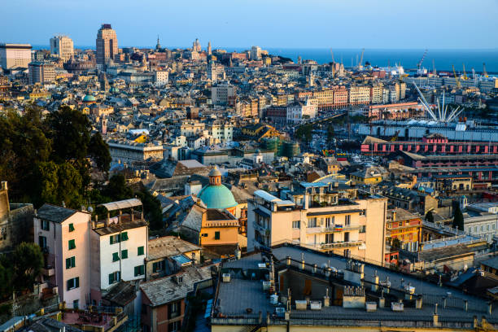
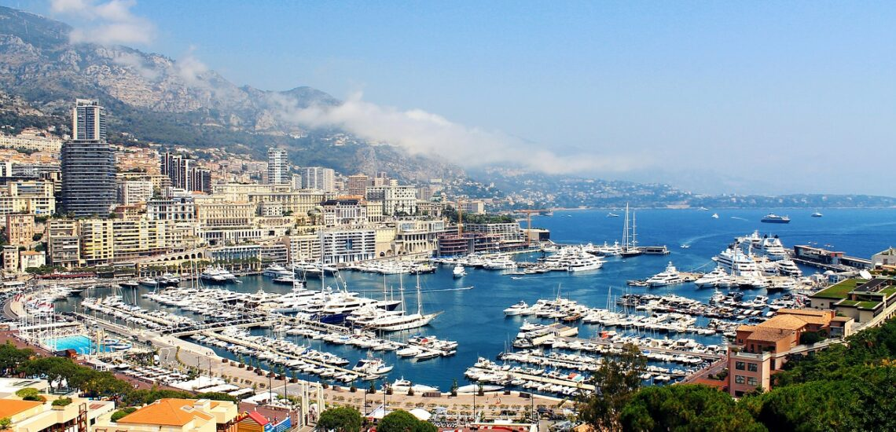
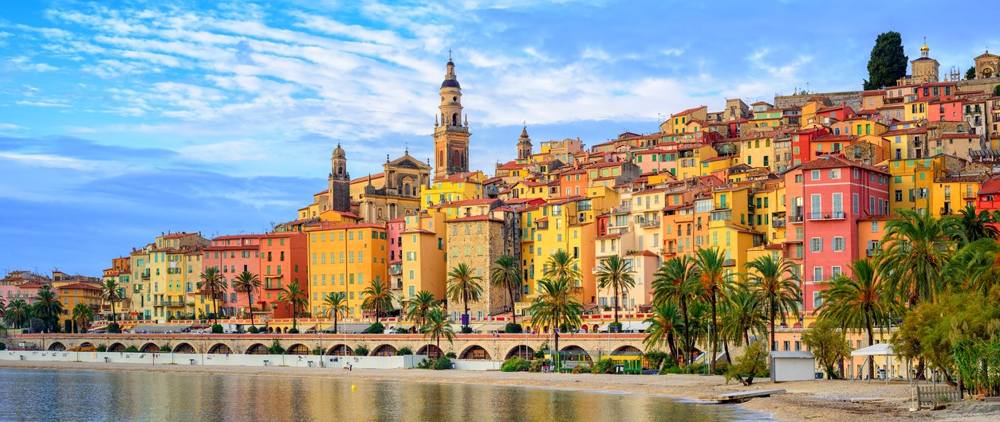

Ruta sugerida
La ruta para este día incluye un trayecto desde Milán hasta Cannes, pasando por Génova, Mónaco y Niza. A continuación, se detallan las paradas y puntos de interés:
1. Milán → Génova (145 km, 1h 45min en coche)
Qué ver en Génova:
- Puerto Antiguo: Pasea por esta zona histórica renovada con vistas al mar.
- Catedral de San Lorenzo: Una joya arquitectónica gótica.
- Vía Garibaldi: Declarada Patrimonio de la Humanidad por la UNESCO, con palacios renacentistas impresionantes.
- Casa de Cristóbal Colón: Un lugar histórico que puedes visitar brevemente.
Comida callejera y rápida en Génova
- Antica Sciamadda (Vico Croce Bianca): Ideal para probar farinata y otros snacks locales, barato y muy genuino.
- Focacceria Revello (Via Sottoripa): Focaccia tradicional, también con queso de Recco. Perfecta para un bocado rápido junto al puerto.

El Puerto Antiguo de Génova, un lugar lleno de historia y encanto.
🚗 1. Milán → Génova (llegada aprox. entre 11:30 y 12:00)
🧭 Qué hacer en Génova (1–1,5 h):- Viejo puerto (Porto Antico): visita rápida al Acuario o Galata Museo del Mare, ideal para hacer un paseo junto al mar y admirar barcos históricos.
- Piazza De Ferrari & zona histórica: verás la famosa fuente, teatro Carlo Felice, y las esplendorosas “Strade Nuove” – Via Garibaldi y Via Balbi (UNESCO).
- Park Calata Gadda (Porto Antico): €1.80/h (día); noche €2.00 tras las 3 h AM.
- Piazza Carignano (cerca del centro): €1.30 la 1ª h, 2 h = €3.00; tras 3 h, €2/h adicionales.
- Calle azul (zona centro cerca de ZTL): €2.50/h en días laborables.
- MarinaPark: por día (~€15–20/día) si usarás varias horas.
💡 Recomendación: Aparca en Calata Gadda si vas al Porto Antico, o en Piazza Carignano para quedar cerca del centro. El centro histórico es ZTL, evita callejones restringidos.
🚘 Ruta y tiempos en Génova:- 12:00 – Aparcas y caminas unos 5 min al Porto Antico.
- 12:05–12:40 – Paseo por Porto Antico + fotos.
- 12:40–13:10 – Conduces al centro y exploras Piazza De Ferrari y Strade Nuove (Via Garibaldi y Balbi).
- 13:10 – Regreso al coche y salida hacia Mónaco.
⏱️ Salida topline hacia Mónaco: estancia de ~1 h10 (aprox 200 km por A10/E80).
2. Génova → Mónaco (180 km, 2h 30min en coche)
Qué ver en Mónaco:
- Montecarlo: Visita el famoso Casino y el Café de París.
- Palacio del Príncipe: Admira la residencia oficial de la familia Grimaldi y disfruta del cambio de guardia.
- Museo Oceanográfico: Ideal para familias y amantes de la vida marina.
- Jardines de San Martín: Un lugar tranquilo con vistas al Mediterráneo.

Vista de Mónaco, con su famoso Casino y el Palacio del Príncipe.
🏎️ 2. Génova → Mónaco (llegada aprox. 16:00–16:30)
🧭 Qué hacer en Mónaco (≈1 h15 – 1 h30):- Paseo por el casco antiguo de La Placette, visita al Palacio del Príncipe (ext. y vistas).
- Paseo junto al Port Hercule, ver los yates o subir al Casino de Monte‑Carlo (fuera y zona de lujo).
- Garajes públicos (Place d’Armes u otros): 1ª hora gratis; luego €2.70–€3.10/h; 2 h ≈ €5.40+.
- Place d’Armes: gratuito 1 h, 2 h = €9, 3 h = €13.
- Les Salines: opción económica de €7.50–11,50 con bus gratis a Monte Carlo (desde 1 julio 2024).
- Estacionar fuera de Mónaco: en Roquebrune-Cap‑Martin (lado francés), gratis + caminata/paseo al centro.
💡 Recomendación: Si buscas comodidad, aparca en Place d’Armes: 1 h gratis, luego €9 para 2 h, a pie al interior del Principado. Si prefieres ahorrar, deja el coche en Les Salines (~€11 por 4 h con bus y un poco más de traslado).
- En Mónaco, activa el bus gratuito desde Les Salines si optas por esa opción.
- Verifica horarios de salida para evitar tráfico en la A8 al acercarte a Cannes.
- Asegúrate de usar la app EasyPark o Parkingpay para pagos sin monedas.
3. Mónaco → Niza → Cannes (50 km, 1h en coche)
🛣️ 3. Mónaco → Cannes (salida 18:15–18:30)
Trayecto: ≈55 km, 1 h15 por A8, llegada a Cannes sobre las 19:45.
Ideal para pasear por La Croisette y llegada aún con luz para disfrutar el ambiente costero.
Qué ver en Niza:
- Paseo de los Ingleses: Un paseo marítimo icónico con vistas al Mediterráneo.
- Casco Antiguo (Vieux Nice): Calles estrechas llenas de encanto, mercados y restaurantes.
- Colina del Castillo: Ofrece vistas panorámicas de la ciudad y el mar.
- Playa de Niza: Relájate en sus playas de guijarros.

Vista del Paseo de los Ingleses en Niza, un lugar lleno de vida y encanto.
Alojamiento en Cannes
Te alojarás en Cannes en el siguiente establecimiento:
Hotel des Victoires - Restaurant
- Entrada: Jueves, 24 de julio de 2025 (de 15:00 a 22:00)
- Salida: Viernes, 25 de julio de 2025 (de 07:00 a 12:00)
- Tu reserva: 1 noche, Prestige triple room (1 queen bed & 1 single bed)
- Reservaste para: 2 adultos, 1 niño (10 años)
- Ubicación: 204-212, Avenue Francis Tonner, 06150 Cannes, Francia
- Teléfono: +33 4 93 48 21 00
- Contacto: Enviar e-mail al alojamiento
Condiciones de la Reserva
Pago por adelantado: Sin pago por adelantado.
Condiciones de cancelación: Puedes cancelar gratis hasta las 18:00 del día de llegada. Si cancelas después de las 18:00 del día de llegada, el cargo por cancelar será el precio total de la reserva. Si no te presentas, el cargo será igual al de cancelación.
Cargos de cancelación:
- Hasta el 24 de julio de 2025 18:00: € 0
- Desde el 24 de julio de 2025 18:00: € 125,92
Desglose del Precio
- 1 Prestige triple room: € 109,35
- IVA: € 10,93
- Impuesto municipal: € 5,64
- Precio total: € 125,92
Consejos para la ruta
Duración total del trayecto: Aproximadamente 6-7 horas sin contar las paradas.
Mapa de la Ruta
Gastos
En esta ruta, los gastos aproximados son los siguientes:
- Peajes: 30 € (estimado para la ruta Milán-Génova-Mónaco-Niza-Cannes)
- Gasolina: 60 € (aprox. 420 km, consumo 7 l/100 km, 1.40 €/l)
- Comida: 100 € (estimado para dos adultos y un niño)
- Alojamiento: 125,92 € (precio total de la reserva)
- Total estimado: 315,92 €